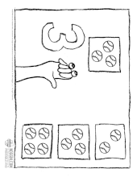
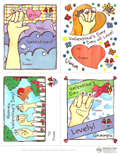
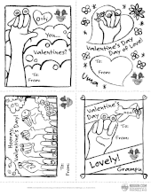
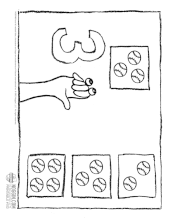
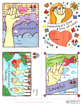
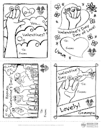

 .pdf file (224 KB)
.pdf file (224 KB)
.pdf file (1.36 MB)
.pdf file (0.98 MB)
| Oobi Numbers  .pdf file (224 KB) |
Oobi Color Valentines  .pdf file (1.36 MB) |
Oobi Print and Color Valentines  .pdf file (0.98 MB) |
|---|
.swf file (163 KB)